Teil A: Expositionspfade
1. Bei Ableitung mit Luft:
1.1 Exposition durch Betastrahlung innerhalb der Abluftfahne (Betasubmersion)
1.2 Exposition durch Gammastrahlung aus der Abluftfahne (Gammasubmersion)
1.3 Exposition durch Gammastrahlung der am Boden abgelagerten radioaktiven Stoffe (Gammabodenstrahlung)
1.4 Exposition durch Aufnahme radioaktiver Stoffe mit der Atemluft (Inhalation)
1.5 Exposition durch Aufnahme radioaktiver Stoffe mit Lebensmitteln (Ingestion) auf dem Weg
1.5.1 Luft – Pflanze
1.5.2 Luft – Futterpflanze – Kuh – Milch
1.5.3 Luft – Futterpflanze – Tier – Fleisch
1.5.4 Luft – Muttermilch
1.5.5 Luft – Nahrung – Muttermilch
2. Bei Ableitung mit Wasser:
2.1 Exposition durch Aufenthalt auf Sediment (Gammabodenstrahlung)
2.2 Exposition durch Aufnahme radioaktiver Stoffe mit Lebensmitteln (Ingestion) auf dem Weg
2.2.1 Trinkwasser
2.2.2 Wasser – Fisch
2.2.3 Viehtränke – Kuh – Milch
2.2.4 Viehtränke – Tier – Fleisch
2.2.5 Beregnung – Futterpflanze – Kuh – Milch
2.2.6 Beregnung – Futterpflanze – Tier – Fleisch
2.2.7 Beregnung – Pflanze
2.2.8 Muttermilch infolge der Aufnahme radioaktiver Stoffe durch die Mutter über die oben genannten Ingestionspfade
3. Ionisierende Strahlung aus kerntechnischen Anlagen, aus Anlagen im Sinne des § 9a Absatz 3 Satz 1 erster Halbsatz zweiter Satzteil des Atomgesetzes, aus Anlagen zur Erzeugung ionisierender Strahlung und aus anderen Einrichtungen:
3.1 Gammastrahlung
3.2 Röntgenstrahlung
3.3 Neutronenstrahlung
4. Bei Bodenflächen, die auf sonstigen Wegen kontaminiert wurden:
4.1 Exposition durch Aufenthalt auf kontaminierten Böden oder neben kontaminierten Ablagerungen (Gammabodenstrahlung)
4.2 Exposition durch Aufnahme resuspendierten Bodens oder Materials von Ablagerungen mit der Atemluft (Staubinhalation)
4.3 Exposition durch Aufnahme kontaminierten Bodens oder Materials von Ablagerungen über den Mund (Bodeningestion)
4.4 Exposition durch Aufnahme radioaktiver Stoffe mit Lebensmitteln, die in Privatgärten neben kontaminierten Ablagerungen (Staubpfad) oder auf kontaminierten Böden erzeugt werden
Expositionspfade bleiben unberücksichtigt oder zusätzliche Expositionspfade (z. B. der Sickerwasserpfad bei kontaminierten Ablagerungen) sind zu berücksichtigen, wenn dies auf Grund der örtlichen Besonderheiten des Standortes oder auf Grund der Art der kerntechnischen Anlage, der Art der Anlage im Sinne des § 9a Absatz 3 Satz 1 erster Halbsatz zweiter Satzteil des Atomgesetzes, der Art der Anlage zur Erzeugung ionisierender Strahlung, der Art der anderen Einrichtung oder der Besonderheit der auf sonstigem Weg kontaminierten Bodenfläche begründet ist.
Teil B: Lebensgewohnheiten
Tabelle 1
Verzehrsraten
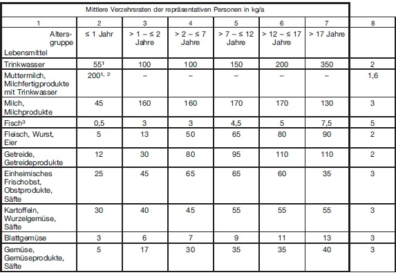
Für die Lebensmittelgruppen "Trinkwasser" und "Muttermilch, Milchfertigprodukte mit Trinkwasser" ist anzunehmen, dass 100 Prozent der Produkte kontaminiert sind. Für alle anderen Lebensmittelgruppen ist von 50 Prozent auszugehen. Die Lebensmittelgruppe "Getreide" sowie Kontaminationen über den Staubpfad für die Lebensmittelgruppe "Kartoffeln, Wurzelgemüse" können bei Radionukliden der natürlichen Zerfallsreihen Uran-238 und Thorium-232 grundsätzlich unberücksichtigt bleiben.
Bei der Ermittlung der zu erwartenden Exposition nach § 100 Absatz 1 im Rahmen des Genehmigungs- oder Anzeigeverfahrens für Tätigkeiten nach § 4 Absatz 1 Nummer 1 und Nummer 3 bis Nummer 8 des Strahlenschutzgesetzes sowie bei der Ermittlung der erhaltenen Exposition nach § 101 Absatz 1 Nummer 1 oder 2 ist für die Lebensmittelgruppe, die bei mittleren Verzehrsraten zur höchsten Ingestionsdosis führt, die mittlere Verzehrsrate mit dem Faktor in Spalte 8 zu multiplizieren. Zur Festlegung der dosisdominierenden Lebensmittelgruppe sind alle pflanzlichen Produkte außer Blattgemüse zu einer Lebensmittelgruppe zusammenzufassen. Für alle übrigen Lebensmittelgruppen sind die mittleren Verzehrsraten anzusetzen.
Tabelle 2
Atemraten
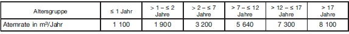
1 Mengenangabe in [l/a].
Zur jährlichen Trinkwassermenge des Säuglings von 55 l/a kommen 160 l/a, wenn angenommen wird, dass der Säugling nicht gestillt wird,
sondern nur Milchfertigprodukte erhält, die überregional erzeugt werden und als nicht kontaminiert anzusetzen sind. Dabei wird angenommen,
dass 0,2 kg Konzentrat (entspricht 1 l Milch) in 0,8 l Wasser aufgelöst werden.
2 Je nach Nuklidzusammensetzung ist die ungünstigste Ernährungsvariante zugrunde zu legen.
3 Der Anteil von Süßwasserfisch am Gesamtfischverzehr beträgt im Mittel ca. 17 Prozent und ist den regionalen Besonderheiten anzupassen.
Tabelle 3
Aufenthaltsdauern, Aufenthaltsorte und Reduktionsfaktoren
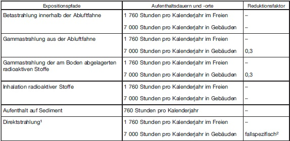
Für die prospektive Berechnung der Exposition sind die in Tabelle 3 genannten Zahlenwerte für die jeweiligen Expositionspfade zu verwenden. Für den Aufenthalt im Freien sind folgende Fälle zu betrachten:
Die repräsentative Person hält sich im Freien entweder 760 Stunden pro Kalenderjahr auf Sediment und die restlichen 1 000 Stunden pro Kalenderjahr an anderen Stellen oder 1 760 Stunden pro Kalenderjahr an anderen Stellen im Freien auf. Für die prospektive Berechnung der Exposition ist die insgesamt ungünstigste Variante zugrunde zu legen.
Für die retrospektive Berechnung der Exposition sind, falls bekannt oder mit vertretbarem Aufwand ermittelbar, die tatsächlichen Aufenthaltsdauern und -orte während des betrachteten Zeitraums zugrunde zu legen. Andernfalls ist wie bei der prospektiven Berechnung der Exposition zu verfahren.
Teil C: Übrige Annahmen
1 Ionisierende Strahlung aus kerntechnischen Anlagen, Anlagen im Sinne des § 9a Absatz 3 Satz 1 erster Halbsatz zweiter Satzteil des Atomgesetzes,
Anlagen zur Erzeugung ionisierender Strahlung und anderer Einrichtungen.
2 Fallspezifische Reduktionsfaktoren für Direktstrahlung (Gammadirektstrahlung und Röntgendirektstrahlung) bei Aufenthalt in Gebäuden:
0,3 bei kerntechnischen Anlagen, Anlagen im Sinne des § 9a Absatz 3 Satz 1 erster Halbsatz zweiter Satzteil des Atomgesetzes,
0,3 bei Anlagen zur Erzeugung ionisierender Strahlung und anderen Einrichtungen, die sich nicht in demselben Wohngebäude wie die repräsentative
Person befinden,
1 bei Anlagen zur Erzeugung ionisierender Strahlung und anderen Einrichtungen, die sich in demselben Wohngebäude wie die repräsentative
Person befinden.
Bei Neutronendirektstrahlung ist der Reduktionsfaktor 1 zu verwenden.
Tabelle 4
Generische radionuklidspezifische Faktoren
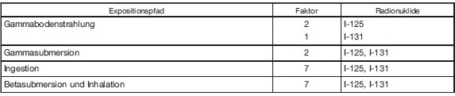
Tabelle 5
Expositionspfadspezifische Faktoren
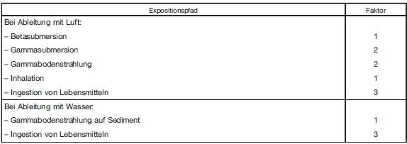
Teil D: Maximal zulässige Aktivitätskonzentrationen aus Strahlenschutzbereichen
Bei mehreren Radionukliden ist die Summe der Verhältniszahlen aus der mittleren, jährlichen Konzentration der Radionuklide in Luft bzw. in Wasser in Bq/m3 (
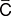
i,a) und dem jeweiligen berechneten, mittleren, jährlichen Konzentrationswert des jeweiligen Radionuklids (Ci) der Tabelle 6 oder 7 zu bestimmen (Summenformel), wobei i das jeweilige Radionuklid ist. Diese Summe darf den Wert 1 nicht überschreiten: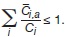
Tochternuklide sind zu berücksichtigen.
1. Maximal zulässige Aktivitätskonzentration in der Luft aus Strahlenschutzbereichen
1.1 Inhalation
Die Aktivität des Radionuklids i im Jahresdurchschnitt im Kubikmeter Luft darf
1.1.1 für Fortluftströme Q ≤ 104 m3 h-1 nicht höher sein als das Zehnfache der jeweiligen Werte der Tabelle 6 Spalte 2 oder Tabelle 8 Spalte 2 oder
1.1.2 für Fortluftströme 104 m3 h-1 < Q ≤ 105 m3 h-1 nicht höher sein als die jeweiligen Werte der Spalte 2 der Tabellen 6 oder 8;
1.2 Submersion
Die Aktivität des Radionuklids i im Jahresdurchschnitt im Kubikmeter Luft darf
1.2.1 für Fortluftströme Q ≤ 104 m3 h-1 nicht höher sein als das Zehnfache der Werte der Tabelle 7 Spalte 2 oder
1.2.2 für Fortluftströme 104 m3 h-1 < Q ≤ 105 m3 h-1 nicht höher sein als die Werte der Tabelle 7 Spalte 2.
2. Maximal zulässige Aktivitätskonzentration im Wasser, das aus Strahlenschutzbereichen in Abwasserkanäle eingeleitet wird
2.1 Ingestion
Die Aktivität des Radionuklids i im Jahresdurchschnitt im Kubikmeter Wasser darf
2.1.1 für Abwassermengen ≤ 105 m3 a-1 nicht höher sein als das Zehnfache der jeweiligen Werte der Tabelle 6 Spalte 3 oder Tabelle 8 Spalte 4 oder
2.1.2 für Abwassermengen 105 m3 a-1 < Q ≤ 106 m3 a-1 nicht höher sein als die jeweiligen Werte der Tabelle 6 Spalte 3 oder Tabelle 8 Spalte 4.
Tabelle 6
Aktivitätskonzentration Ci aus Strahlenschutzbereichen
(zu Teil D Nummer 1.1 und 2)
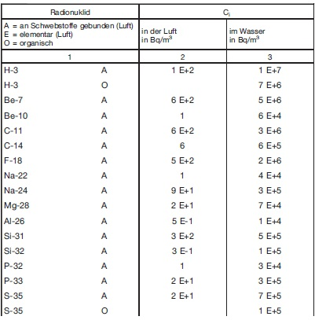
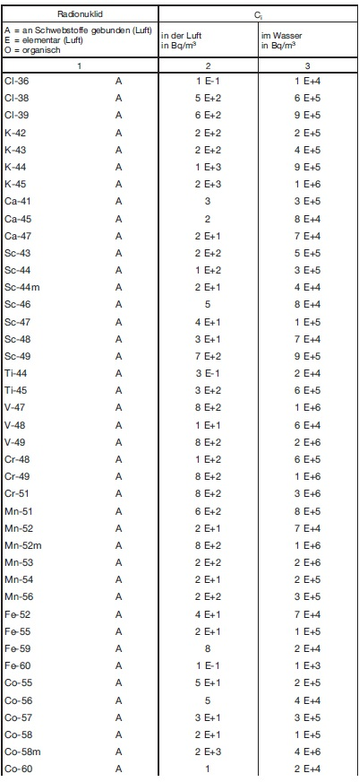
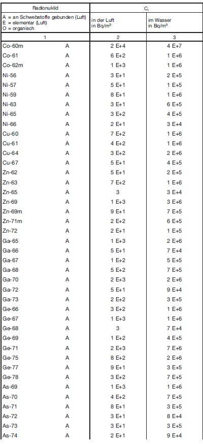
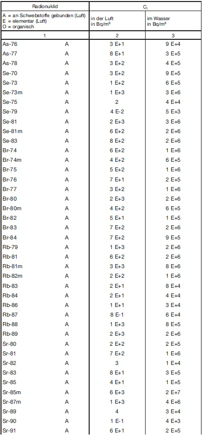
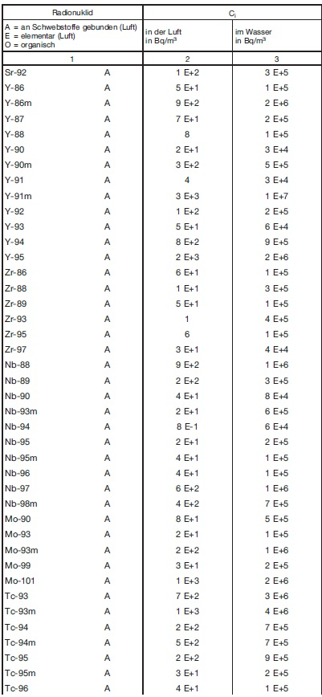
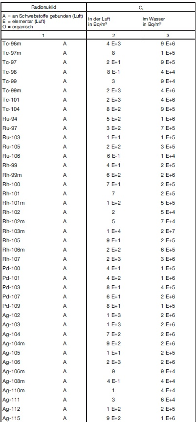
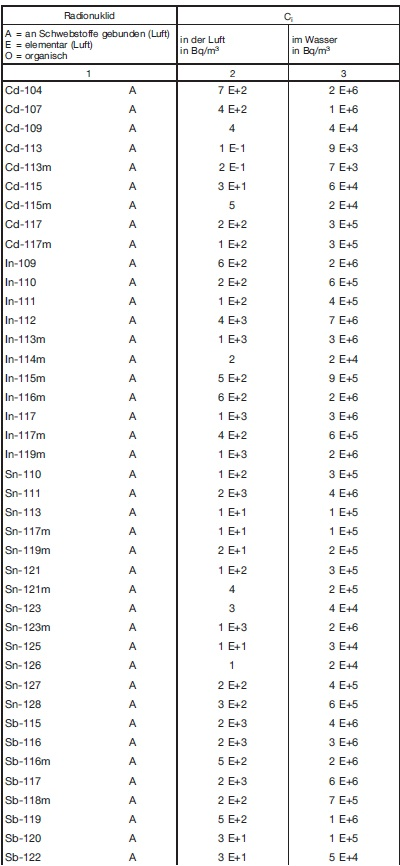
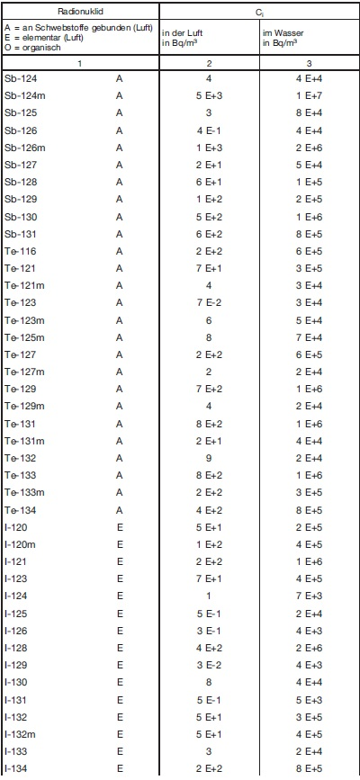
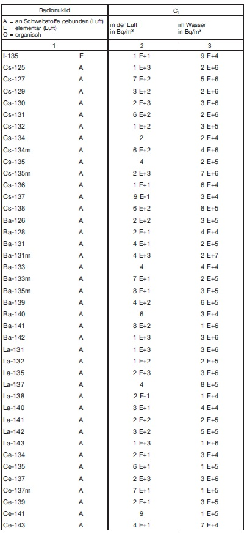
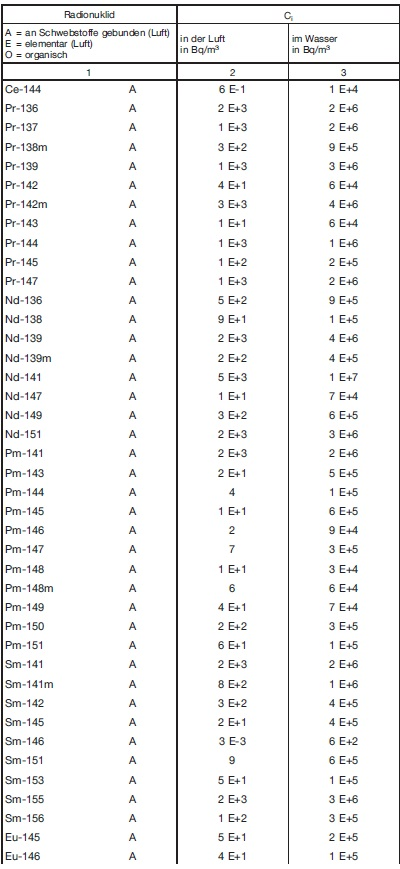
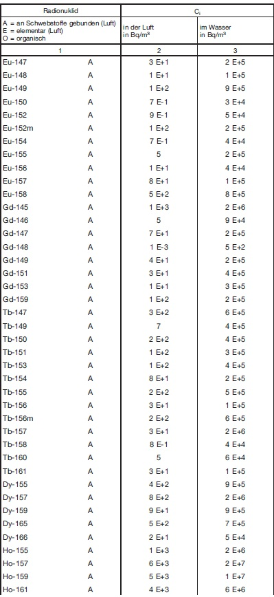
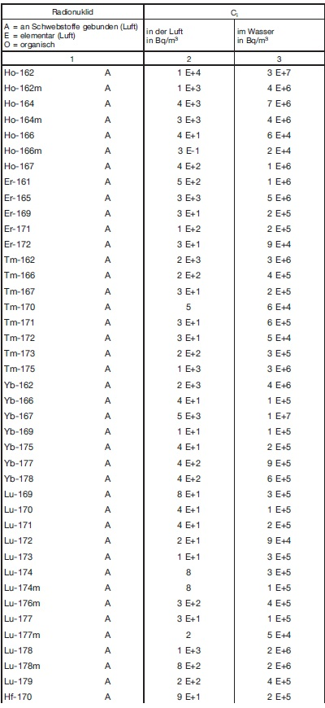
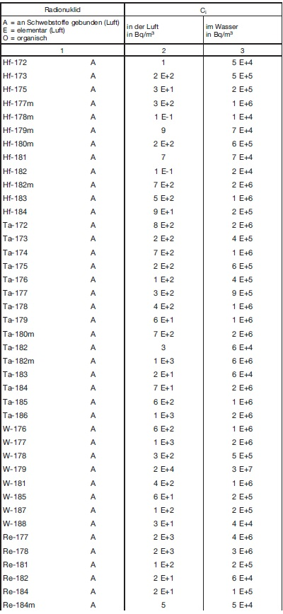
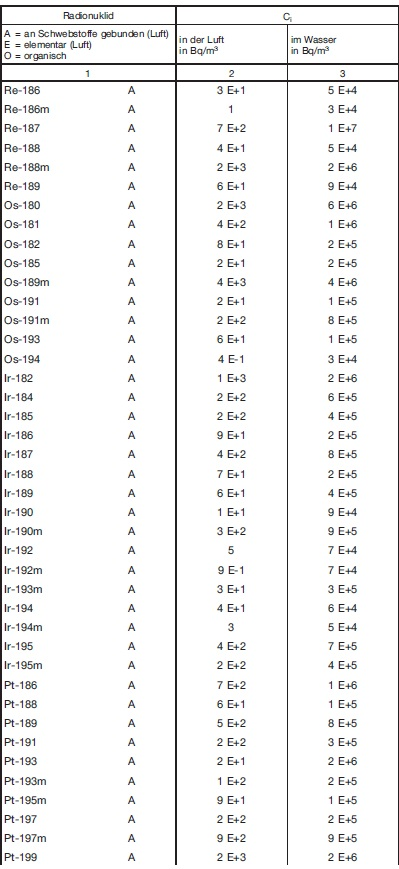
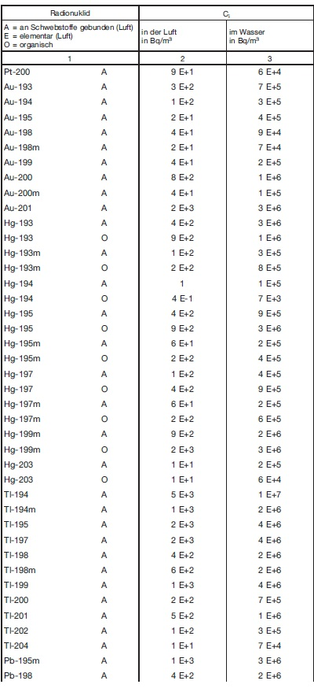
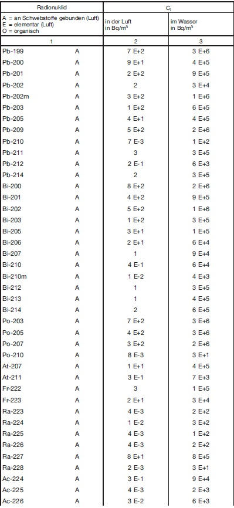
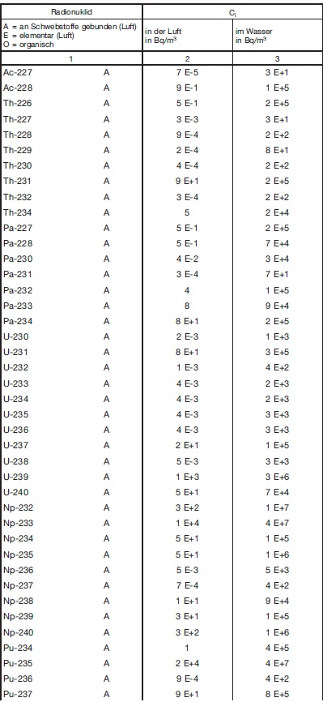
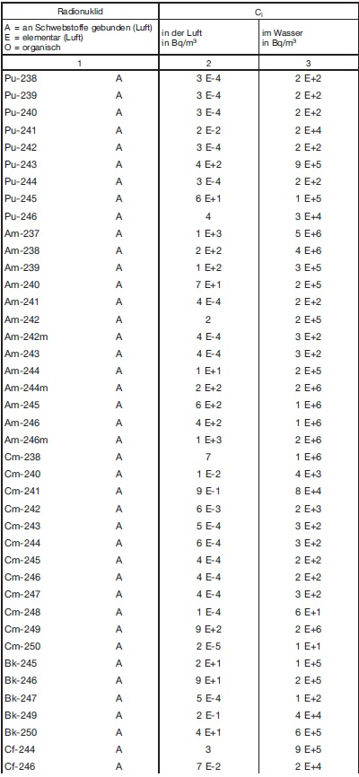
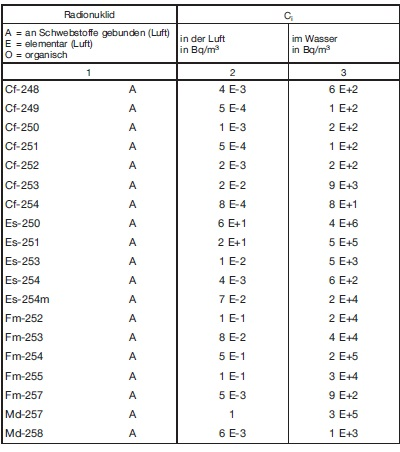
Tabelle 7 Aktivitätskonzentration Ci aus Strahlenschutzbereichen (zu Teil D Nr. 1.2)
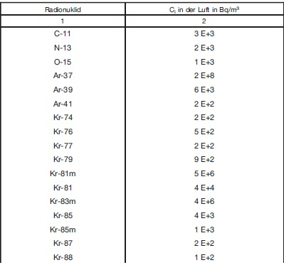
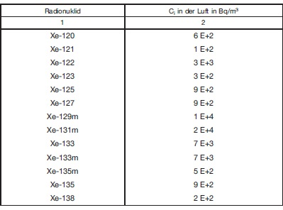
Tabelle 8 Aktivitätskonzentration Ci aus Strahlenschutzbereichen (zu Teil D Nummer 1.1 und 2)
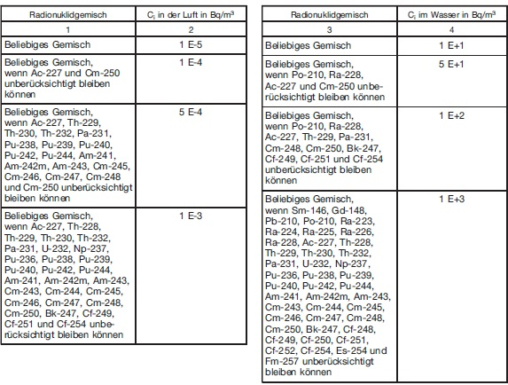